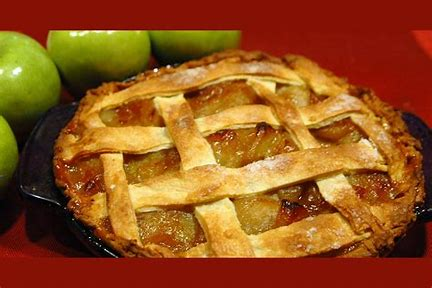
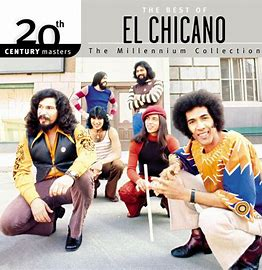

Welcome To JorgesMason Portal
This site is just my personal website and really just an addtion to my repository. It is also a recollection of other sites I have ever made, So feel free to explore the pages. Below me is a list of a few things that I enjoy and like. I Know this is the home page but for more rankings on my personal opinion, Vist JorgesMason Lists.
Apple Pie

This is definitely a favorite of mine.
It just taste so good, I mean really who wouldn't want to eat this?
Makes you want to get a slice, no?
Michael De Santa (GTA 5)
The amount of times this man has made me laugh is immeasurable.
This dude has single-handedly brought me so much joy, it's not even funny
I'm not saying he is good person (If you ever decide to play the game, you will see that) but his demanaor is just funny to me.
I have to give him thanks for helping shape my style/lingo
Luke Skywalker

The GOAT of Star Wars.
No further explantion needed.
Also, he looks cool in this photo
Neil deGrasse Tyson And Bill Nye
These dudes man......
Look at the image and tell me you don't feel smarter already.
In fact, these two men convinced me that the theory of evolution is true.
They convinced me that we as a human race evolved from monkeys
El Chicano

Their music is top tier, it is so calming and relaxing listening to it.
It might sound boring at first, but I promise some of their songs are great.